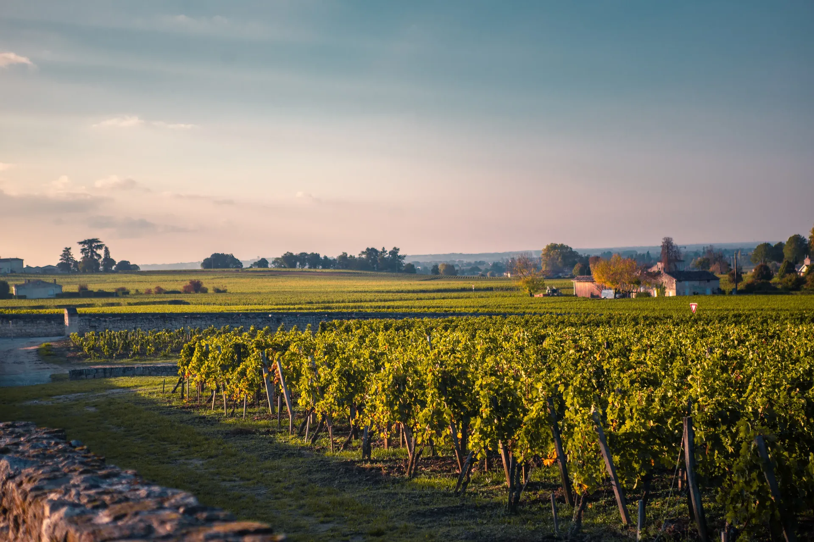

La minéralité. Ce mot qui ne veut rien dire.
Tout le monde l'utilise. Personne ne s'entend sur ce qu'il désigne. « Minéral », « salin », « pierre à fusil » — le vocabulaire de la dégustation déborde de mots qui évoquent la roche, le caillou, la craie. Mais qu'est-ce qu'on goûte, exactement ?
La science est formelle : un cep n'absorbe pas de minéraux assez gros pour qu'on les sente. Ce qu'on appelle minéralité est presque toujours autre chose — une acidité vive, une amertume légère, une réduction maîtrisée. Le mot est commode parce qu'il est vague.
La minéralité n'est pas dans le sol.C'est une sensation, pas une substance.
Alors pourquoi on continue ?
Parce que le mot fonctionne. Il dit quelque chose de vrai sur l'impression — cette fraîcheur tendue, ce côté qui « gratte » sans être acide. Le problème n'est pas le ressenti. C'est de le présenter comme une preuve de terroir, alors que c'est d'abord une affaire de vinification.
Le vin mérite mieux que les certitudes. On peut aimer un mot et savoir ce qu'il cache. C'est tout l'enjeu d'une dégustation honnête.
Goûtez avec moià Marseille.
Des ateliers pour les curieux, pas pour les connaisseurs. On part du verre, on remonte au geste du vigneron.